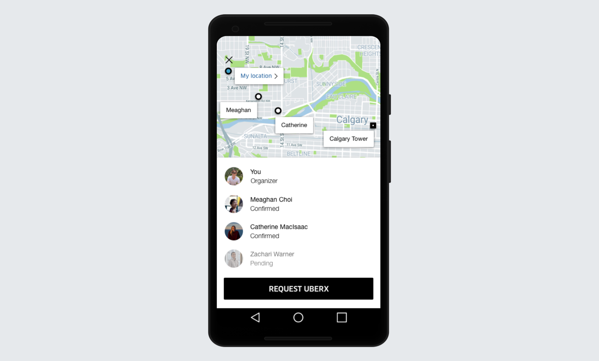

School Project
UberPool Party
Currently, there is no real way in the Uber app to pick up/drop off multiple friends at various locations. I designed a feature to address this problem. A fully detailed pdf of the project can be viewed here.
Current State of the Art
Currently, there are several carpooling apps, but none of them let users select who they ride with. Instead, UberPool, Lyft Line, and Waze pair riders based on convenient routing. Frustrations stem from the current carpooling systems including confusion about how the system works, conflict between passengers, and time spent picking up other riders.
Alternatively, some users do pick up friends on Uber, although in an unofficial manner. Many users get around the lack of a pick-up feature by setting the destination to their friend’s house, and then changing the destination once the friend is picked up. This requires explaining the situation to the driver and continuously updating the destination. There is also no way to split the fare based on individual distance travelled, so the riders must split the fare equally.
User Interviews
I interviewed six Uber users via phone, asking questions mainly about how they use Uber to get to events. These interviews presented some key findings. Most users, particularly women, do not like showing up to events alone. They usually meet at one location then Uber to the event together, which can be time consuming. Some users already use Uber to pick up at multiple locations by changing the destination when they reach a stop and explaining the situation to the driver. This can be a pain to explain, since the driver doesn’t always understand. Users also said it’s a hassle to keep changing the destination.
Regarding the feature, people thought that the price should be split based on the distance travelled, since some riders may live much closer to the destination than others. Some users also voiced concerns that the feature would only be helpful if all party members lived en route to the destination.
Problem Statement
Current carpool methods do not allow for streamlined pick-up of the user’s acquaintances. The goal is to design a system where friends can Uber together from separate locations and split costs fairly.
Personas
I created two personas, based on the stories of the users interviewed.


Storyboard
Next, I drew a storyboard, outlining the most common use case for this pick-up feature.

User Requirements
I made a list of user requirements, which included being able to invite multiple contacts, invitees confirming pick-up before location is shared, being able to order the Uber even if a response is not received, and everyone being aware of the route and other passengers. More requirements can be seen here.
Workflow
Due to convenience and safety reasons, I designed a system where the trip organizer invites their contacts, and the invitees must confirm their address before being added to the group.
Prototype
After creating several iterations of sketches, I created a high-fidelity solution in Sketch.
Initiating Pick Up Option
The user first selects a final destination, as is usually done. Then, on the request page, if the user wants to pick up friends, they can tap on the Pick Up Friends button underneath Payment Methods.

Inviting Friends
After tapping on Pick Up Friends, a contact list appears. The user can select as many friends as will fit in the Uber. Friends that are frequently picked up will populate the Favourites list at the top. As friends are selected, a blue bar appears at the bottom, populated with the names of the invitees. This allows the user to easily confirm who they’ve selected, thereby preventing error. The user then taps on the paper airplane icon to send the invites.

Accepting an Invite
Once the request is sent, the invitees will receive a notification about the request saying something like, “Derek Dobslaw has requested to pick you up on the way to the Calgary Tower”. Upon tapping the notification, the following screen opens. The user can then see the other users invited and their locations, and the final destination. They can also change their location if desired. The user then either confirms or declines the invite, which is relayed to the other group members.
Group Status Page
Confirmed users, as well as the organizer, can keep track of the status of the group on the group status page. Once a user confirms, their given location appears on the map. The organizer can request the Uber at any time since a situation may arise where an invitee does not respond. If all riders have confirmed, however, any rider will be able to request the Uber.
Trip Route
Once all the users have confirmed their addresses and the Uber has been requested, Uber calculates the optimal route. The optimal route is not calculated until the Uber is requested because it also takes into account Uber car proximity/availability. Once the Uber is on its way, each rider can see the Uber’s progress and estimated arrival time at their location. They can also see the order of the stops combined with who has been picked up